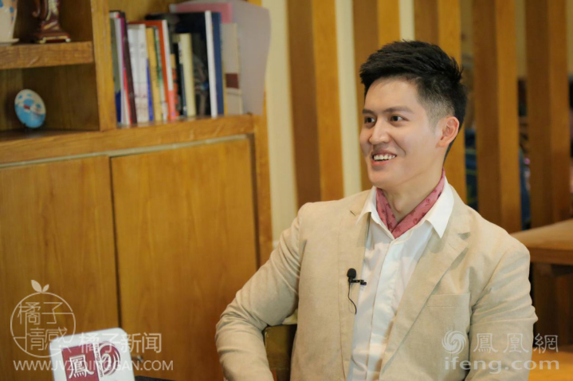

- 返回顶部
- 4006-299-520
- 在线咨询
- 微信公众号

橘子创想文化传播有限公司创始人做客凤凰网访谈实录
嘉伟，橘子情感创始人。国内首批情感挽回导师，资深两性情感分析师，中国婚姻家庭研究会会员，NLP学院常务会员。主要著作有《情感黏性》、《恋爱生态模式》、《极速挽回三阶段》、《情感落差升温法则》等。
郭瑗（主持人）：欢迎来到凤凰会客厅，我是郭瑗，请出橘子情感创始人嘉伟老师，嘉伟老师你好。
郭瑗：您请坐，来，咱们今天来聊聊您的故事。
嘉伟：好啊，我很乐意和大家分享有趣的故事
郭瑗：您为什么有信心从事这个行业？
嘉伟：其实我们现在橘子创想确实是属于情感类的新兴行业，我们的主要的业务是进行情感问题的解决，比如说两个相爱的人分手，怎么帮助他们重新在一起。比如说夫妻离婚，或者是家庭出现危机，应该怎么处理，等等这样的情感问题，都是我们会涉及到的方向。
郭瑗：那你们的产品是“情商”吗
嘉伟：不是情商，而是一种实现情感自由的方法。教人谈恋爱只能算是一部分吧，我们还会教人怎么重新和以前的恋人在一起，怎么让两个离婚的夫妻重新在一起，让所有对爱情还抱有希望，对于之前的行为会有所后悔的人能够实现自己的情感自由。授人以鱼不如授人以渔，我们就是希望能够教给大家解决每个人情感问题的方法。
郭瑗：我其实最想问您，您现在做的这个行业，现在知道的人多吗？
嘉伟：应该说是刚开始不多，后来慢慢的被越来越多的人来熟悉。
郭瑗：外界有人称您为现实版的“复合大师”，您认同这个说法吗？
嘉伟：外界怎么看并不重要，我们希望能够在当今的社会中奉献自己的力量。学习有老师教我们，生活有父母教我们，但是却没有人教我们应该怎么和自己的另一半相处，甚至结婚之后婚姻生活应该怎么经营，这些都没有人教会我们，我希望能够在以后的发展中，橘子情感也能被越来越多的人接受，大家也能越来越重视自己的情感需求，我们也会尽自己的能力去实现每个人的情感自由。